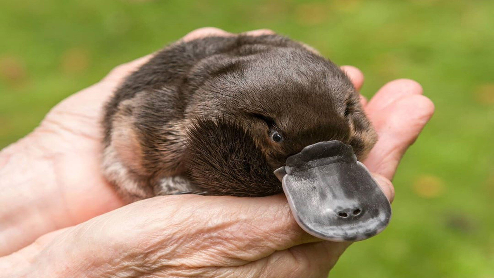

Утконос (лат. Ornithorhynchus anatinus) — водоплавающее млекопитающее отряда однопроходных, обитающее в Австралии. Это единственный современный представитель семейства утконосовых (Ornithorhynchidae). Вместе с ехидновыми образует отряд однопроходных (Monotremata) — млекопитающих, по ряду признаков напоминающих рептилий и немаммальных цинодонтов.
